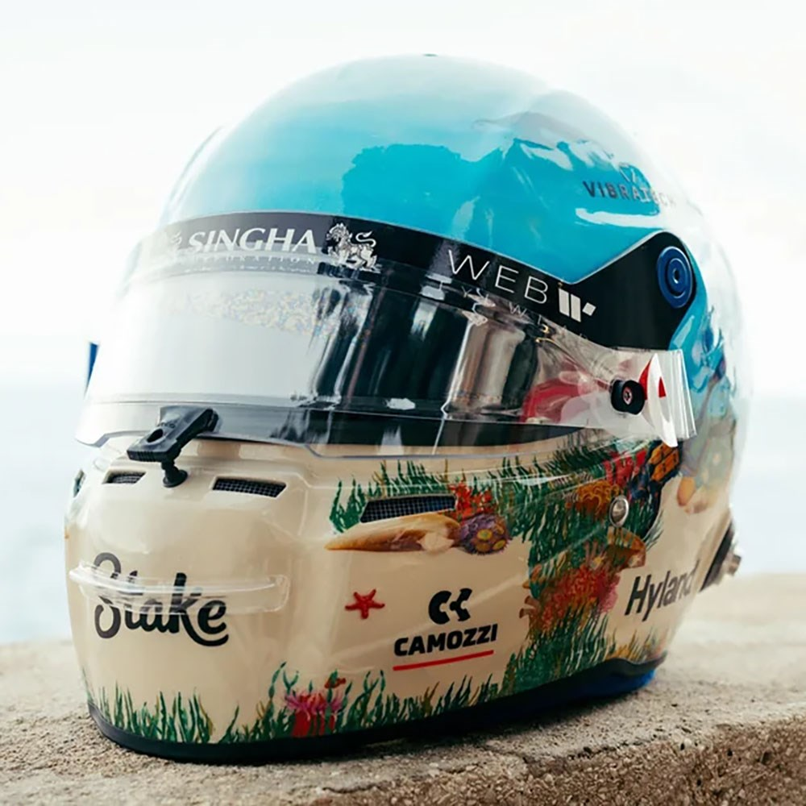

Valtteri Viktor Bottas
- Team: Kick Sauber
- Land: Finnland
- Geburtsort: Nastola, Finnland
- Geburtsdatum: 28.08.1989
- Alter: 35
- Podien: 67
- Grands Prix gefahren: 243
- Weltmeisterschaften: 0
- Team: Kick Sauber
- Fahrernummer: 77
Er lernte sein Handwerk auf finnischen Straßen aus Eis und Schnee und wurde als Grand-Prix-Rennfahrer geboren. Bottas erklärt, dass man überall hinfahren kann, wenn man auf den gefrorenen Straßen seiner Heimat fahren kann. Und dann ist da noch die finnische Mentalität – zurückhaltend, fleißig und ruhig lässt ihn die Überholspur der Formel 1 nicht aus der Ruhe. Bottas, der 2013 sein F1-Debüt mit Williams gab, wurde bald Teil der Familie. Es folgten Punkte und Podestplätze, wobei der zuverlässige Rennfahrer sogar die meisten Punkte ohne Sieg sammelte – ein Rekord, den er verärgerte, der aber sein Können unter Beweis stellte. Die Tatsache, dass der Finne eine solche Punktemaschine war, führte dazu, dass er plötzlich auf den begehrtesten Platz in der Formel 1 befördert wurde - Nico Rosbergs vakanten Meisterplatz bei Mercedes. Bottas blühte 2017 bei den Silberpfeilen auf und entfesselte seine Pace, um persönliche Pole-Positions und Siege sowie eine Teammeisterschaft für die berühmte Mercedes-Marke an der Seite von Lewis Hamilton zu gewinnen. Mit 13 Podestplätzen zog er sogar mit Hamilton und Sebastian Vettel gleich. Für einen schüchternen Mann brachte es einen Schub an Selbstvertrauen und eine neue Prahlerei – wenn auch auf eine sehr zurückhaltende finnische Art. All dieses Selbstvertrauen würde er 2018 brauchen - eine Saison, die Bottas als seine schlechteste in der Formel 1 bezeichnete, da er null Siege einfuhr, Hamilton elf. Das war jedoch eher ein Spiegelbild der Brillanz seines Teamkollegen als eines Mangels an seiner eigenen Seite. Bottas steigerte sich 2019 mit vier Siegen und sicherte sich einen überzeugenden zweiten Platz in der Meisterschaft hinter Hamilton, aber das fiel auf zwei Siege, während sein Teamkollege 2020 elf und 2021 nur noch einen Sieg einfuhr, was Mercedes dazu veranlasste, ihn nach fünf Saisons fallen zu lassen. Im Jahr 2022 schlug er ein neues Kapitel in seiner F1-Karriere auf, indem er seinen Landsmann Kimi Räikkönen ablöste, um eine völlig neue Mannschaft bei Alfa Romeo, jetzt Kick Sauber, anzuführen und den chinesischen Rookie Zhou Guanyu unter seine Fittiche zu nehmen.